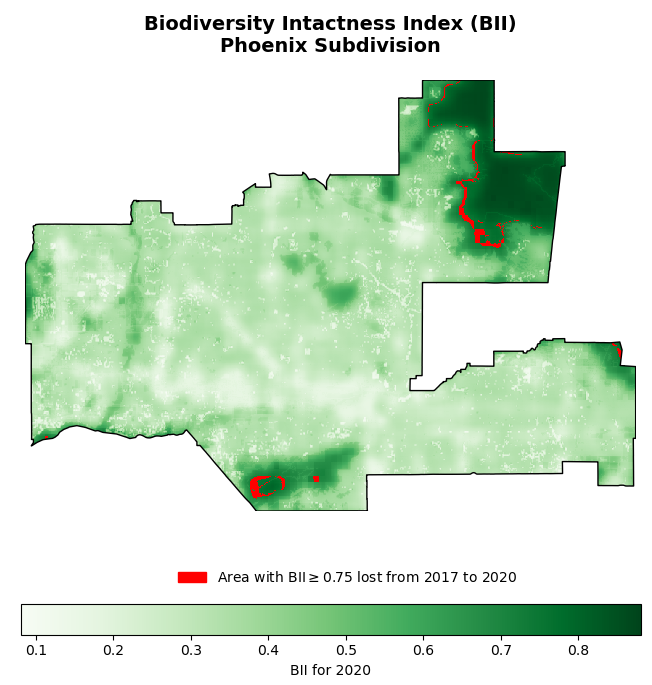
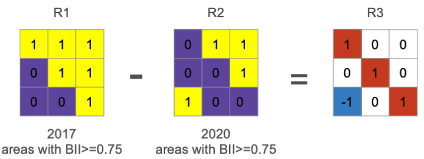

Final project
The project consists of two tasks:
- Task 1: add a blog post to your personal website based on one of your previous assignments and discussion sections. This task is 35% of the final project grade.
- Task 2: create a presentation-ready GitHub repository featuring geospatial analysis in Python. This task is 65% of the final project grade.
Submission instructions
Task 1: Thomas Fire analysis blog post and accompanying analyses
In this task, you will transform your presentation-ready repository from Homework 4 into a polished blog post for your personal website and compile and streamline all its supporting notebooks.
Purpose
Your blog post should showcase two out of the three data analysis exercises we did related to the Thomas Fire:
- Land cover statistics (November 27 exercises)
- Air Quality Index analysis (Hwk 2 - Task 3)
- False color image analysis (Hwk 4 - Task 2)
Your audience is a fellow Python programmer with beginner-to-intermediate geospatial wrangling experience. This is an opportunity to highlight your skills and communicate your analysis in a clear and engaging way!
To help you understand the desired format and text-to-code ratio, review these examples:
https://julietcohen.github.io/posts/2021-12-24-sstsicpython/
https://learning.nceas.ucsb.edu/2023-03-arctic/sections/geopandas.html.
Take note of how they balance explanations, code, and visualizations to communicate their analyses effectively.
In addition to the blog post, the notebooks used for the data analysis should be part of your presentation-ready GitHub repository. These notebook contain work you have already completed and probably revised, so the effort should go into cleaning and streamlining them.
Setup
Updated on Dec 1 to include information about how to render the post.
Guidelines
Your post should be streamlined, focusing on the key steps and results. Avoid lengthy print checks and intermediate outputs, favoring concise, well-explained code chunks.
Your post should include (at least) the following:
- About section:
- Provide context for the analysis. Introduce the Thomas Fire, its significance, and the relevance of your analyses.
- Include an image related to the analysis.
- Highlights of analysis:
- List of highlights of analysis (3 or 4 highlights). What do you consider to be the most important techniques used or insights from the analysis?
- Dataset descriptions:
- Describe the datasets you used and provide proper citations or references.
- Link to GitHub repository:
- Include a link to your GitHub repository at the top of the post. The repository should be presentation-ready and contain the full, detailed analysis.
- Organized data analysis sections:
- Break the analysis into logical sections.
- Include only the most relevant code.
- Aim for a clean, professional layout with properly formatted code snippets and images.
- Final visualizations:
- Showcase your main visualizations with clear captions. Follow each visualization with a short description explaining its insights and relevance.
Task 2: Biodiversity Intactness Index change in Phoenix, AZ
In 2021, Maricopa County —home to the Phoenix metropolitan area— was identified as the U.S. county with the most significant increase in developed land since 2001 [1]. This rapid urban sprawl has profound implications for biodiversity and the health of surrounding natural ecosystems.
In this assignment, you will investigate the impacts of urban expansion by analyzing a dataset that captures values for the Biodiversity Intactness Index (BII) [2]. Your task is to examine changes in BII in the Phoenix county subdivision area between 2017 and 2020, shedding light on how urban growth affects biodiversity over time.
About the data
In this task you will use two datasets.
You will work with two datasets for this task:
- Biodiversity Intactness Index (BII) Time Series Access the
io-biodiversitycollection from the Microsoft Planetary Computer STAC catalog. Use the 2017 and 2020 rasters covering the Phoenix subdivision. For the bounding box, use the following coordinates:
[-112.826843, 32.974108, -111.184387, 33.863574]- Phoenix Subdivision Shapefile Download the Phoenix subdivision polygon from the Census County Subdivision shapefiles for Arizona.
To enhance your data exploration, you may use additional shapefiles or rasters to create a map situating the Phoenix subdivision within its broader geographic context.
Setup
Instructions
1. Data analysis
Explore the data and write a brief summary of the information you obtained from the preliminary information.
Create a map showing the Phoenix subdivision within its broader geographic context. You may use any vector or raster datasets to create your map. Be sure to include citations or descriptions for these datasets at the top of your notebook too. You may also want to check out the
contextilypackage to add a base map.Calculate the percentage of area of the Phoenix subdivision with a BII of at least 0.75 in 2017. Obtain the same calculation for 2020. Before you start coding, take a moment to write step-by-step instructions for yourself about how to get this result. You don’t need to include these in your notebook, but you should have a plan before starting your code.
- Let
xbe anxarray.DataArray. We can select all the values greater thannby simply doingx>n. - Make sure you are calculating the percentage over the Phoenix area, and not the complete raster extent.
- Create a visualization showing the area with BII>=0.75 in 2017 that was lost by 2020. Here’s an example:

- To find which pixels changed value from 2017 to 2020 think about the following example. Which values in R3 represent areas that had BII>=0.75 in 2017 but not in 2020?

- You can plot multiple rasters in the same figure. NaN values will be transparent.
- Under your BII visualization write a brief description of the results you obtianed in this task.
2. Clean notebook
The target audience for your notebook is a fellow EDS 220 student who is just learning geospatial wrangling using Python.
- Add enough and appropriate comments to explain your code.
- First cell in the notebook must be a markdown cell including:
- At the top of the notebook, include an “About” section with the following subsections:
- The rest of your notebook should have:
3. Clean repository
Same as the instructions for assignment 4. Update your repository’s README with (at least) the following (based on EDS 296):